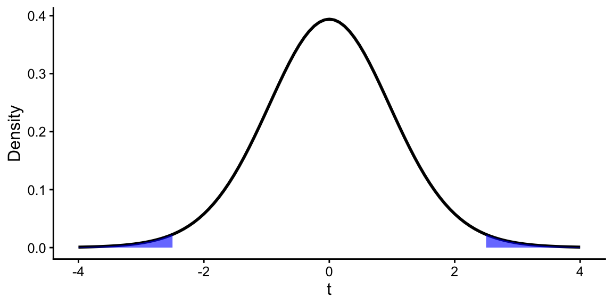

Inference for SLR – Stat 230
Warm-up questions
Quick review of hypothesis testing basics
Suppose that you wish to determine whether there is a difference in means between two groups. To do this you run a two-sample t-test and find the test statistic to be \(t = 2.5\).
- What is the null hypothesis for this test?
TipSolution
\(H_0: \mu_1 = \mu_2\) (or \(H_0: \mu_1 - \mu_2 = 0\))
- What is the alternative hypothesis for this test?
TipSolution
\(H_A: \mu_1 \neq \mu_2\) (two-sided)
- Below is a plot of the appropriate t-distribution for this test. Sketch how you would calculate the p-value for this situation.
TipSolution
The p-value is equal to the area in the two tails beyond \(2.5\) and \(-2.5\).
- How did you calculate this p-value in your last statistics course?
TipSolution
Answers will vary based on where you took intro stats. You may have used StatKey or a similar online app/calculator, you may have used R’s pt() command, or you may have used a t-distribution table (we won’t use tables in this class).
- If the p-value you calculated was 0.02, what would you conclude about the null hypothesis?
TipSolution
A p-value of 0.02 provides evidence against the null hypothesis. In other words, there is statistically discernible evidence of a difference in means between the two groups (\(t=2.5\), p-value = 0.02).
Quick review of confidence intervals
- What is the difference between standard deviation and standard error?
TipSolution
Standard deviation is a summary statistic that we can calculate for any distribution that measures the spread of the distribution. Standard error is the standard deviation of the sampling distribution (i.e., the distribution of a sample statistic). It is a measure of how much variability we expect in a sample statistic (e.g., sample mean or slope) from sample to sample.
A 95% confidence interval for the mean waiting time at an emergency room (ER) of (128 minutes, 147 minutes).
Consider the following interpretation of this interval. For each, determine whether it is correct. If it is incorrect, explain why and provide a correct interpretation.
- “There is a 95% probability that the mean waiting time at this ER is between 128 and 147 minutes.”
TipSolution
This interpretation is incorrect. The population mean is a fixed but unknown value, so the probability that it falls between two specific values is either 0 or 1.
The correct interpretation is that we are 95% confident that true mean waiting time at this ER is between 128 and 147 minutes.
b. "95% of patients wait between 128 and 147 minutes at this ER."
TipSolution
This interpretation is incorrect. The confidence interval is about the population mean, not individual observations.
- A local newspaper claims that the average waiting time at this ER exceeds 3 hours. Is this claim supported by the confidence interval? Explain your reasoning.
TipSolution
Confidence intervals give ranges of plausible values for a parameter based on the data we have in hand; thus, the claim is not supported by the confidence interval. The entire interval (128, 147) is below 180 minutes (3 hours), so we do not have evidence that the mean waiting time exceeds 3 hours.
- Would a 90% confidence interval be wider or narrower than the 95% confidence interval? Why?
TipSolution
A 90% confidence interval would be narrower than a 95% confidence interval. To see this you can find the new critical value, \(t^*\). Alternatively, you can think intuitively about what reducing the confidence level means: for a large number of confidence intervals constructed using the same process, only 90% would contain the true parameter value rather than 95%. This happens if the intervals are narrower.
Your turn1
Biologists know that the leaves on plants tend to get smaller as temperatures rise. A sample of 252 leaves from the species Dodonaea viscosa subspecies angustissima (broadleaf hopbush) have been collected in a certain region of South Australia. Is there an association between leaf width and year? Below is the coefficient table from a simple linear regression model.
| term | estimate | std.error | statistic | p.value |
|---|---|---|---|---|
| (Intercept) | 37.723 | 8.575 | 4.399 | <0.001 |
| Year | −0.018 | 0.004 | −4.029 | <0.001 |
Note: The width is the average width, in mm, of leaves, taken at their widest points, that were collected in a given year.
- Report the fitted regression equation.
TipSolution
\(\hat{y} = 37.723 - 0.018x\)
- Interpret the slope of the regression line in context of the data.
TipSolution
As year increases by 1 (i.e., from one year to the next), we expect the average leaf width of this species to decrease by 0.018 mm.
- Calculate a 95% confidence interval for the slope of the regression line. Interpret this interval in context of the data. To find the critical value, you may use StatKey with df = 250. Alternatively, you may use the rounded critical value of 2.
TipSolution
First, we need to find the critical value for the confidence interval. Using StatKey with df = 250, we find that \(t^* \approx 1.97\).
The 95% confidence interval for the slope is given by:
\[ -0.018 \pm 1.97(0.004) = (-0.02588, -0.01012) \]
- What hypotheses are being tested with the statistic and associated p-value in the
(Intercept)row of the table? What conclusion can you draw?
TipSolution
The summary output provided by R always conducts a two-tailed hypothesis test of whether a regression coefficient is equal to 0. In other words it tests
\(H_0: \beta_0=0\) vs. \(H_a: \beta_0 \ne 0\)
Based on a test statistic of \(t=4.399\), df = 250, and a p-value < 0.001, we find very strong evidence that the intercept is not zero. (This is outside the range of the observed data, so I won’t interpret it in context.)
Footnotes
Adapted from Stat 2: Modeling with Regression and ANOVA↩︎